| A1 | 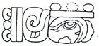 | Distance Number: 8 Winals, 11 K'ins |
| B1 | Star-over-shell [Dragon]-Ha' "war befell Dragon Water" | |
| A2 | 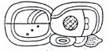 | i u-ti "and then it happened" |
| B2 | 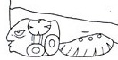 | Calendar Round: 7 Ix 17 Sek (should be 6 Ix, 17 Sek) |
| C1 | Pul ... Ha'? "was burned? ... water?" | |
| D1 | 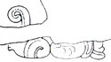 | ????? |
| C2a | 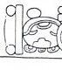 | Distance Number: 1 Winals [9] K'ins |
| C2b | 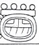 | Tzolk'in: 9 Ak'bal |
| D2a | Haab: 16 Yaxk'in |
| D2b | 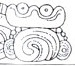 | Star-over-shell "war befell" |
| E1a | 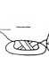 | [Chaak?-na]h? |
| E1b | 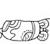 | [u] KAB'-hi "he caused it to be done" |
| F1 | 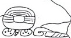 | Mutal [Nal?] "Mutul Person" |
| E2a | 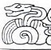 | Lok'-yi "he escaped" |
| E2b | 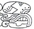 | B'alah Chan K'awiil |
| F2a | t'ab-yi "he went up" | |
| F2b | Ix Witz |